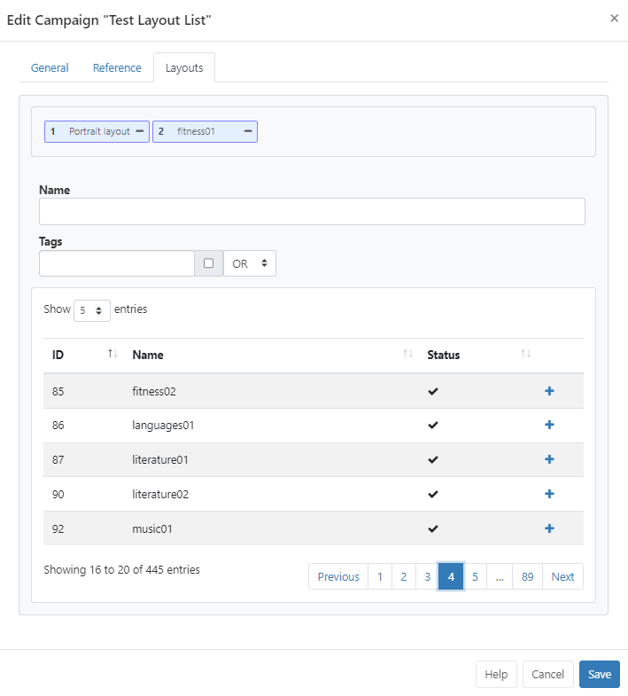

Campaigns
BI Square Brand Activation has two Campaign types:
- Layout List - a collection of Layouts in an ordered list.
- Ad Campaign - allows for the creation of advertising campaigns (Feature enabled).
Create a Layout List
A Layout List Campaign allows a User to set the playback of a group of Layouts in a defined order.
If you think of a Layout as a single slide in a presentation deck, a Campaign is the entire presentation!
Click on Campaigns under the Design section of the main CMS menu:

-
Click the Add Campaign button at the top of the grid.
-
Select Layout List from the drop down and complete the form fields:

Folders are used to organise, search and easily Share User objects with other Users/User Groups. Campaigns saved to a Folder will inherit the access options applied to that Folder.
If users should also have access to the Layouts/Layout content, ensure that this is also saved to the same Folder!
- Give your Campaign a Name for easy identification in the CMS including optional Tags.
Tags and Folders can also be assigned to multiple Campaigns using the With Selected option at the bottom of the Campaign grid!
Cycle Based Playback
When a Campaign is scheduled with Cycle Based Playback enabled, 1 Layout will be shown for a set Play Count. The same Layout will be shown each Schedule loop until the Play Count has been achieved.
Once enabled, provide a Play Count to determine how many ‘plays’ a Layout should have before moving onto the next Layout in the Campaign.
List Play Order
For Campaigns that do not have Cycle Based Playback enabled, List Play Order options can be used to determine how Layouts assigned to the Campaign will play when scheduled at the same time as another Campaign with the same Display Order:
Round Robin - Layouts from each Campaign will play interleaved.
Block - Layouts will play in their entirety from a Campaign before moving onto the next Campaign.
Add Layouts to a Campaign
On Saving, the form will re-open with additional tabs.
Use the Layouts tab to select which Layouts to add:

-
Using the
+icon to select which Layouts to add. -
Selected Layouts will be added to the ‘staging area’ at the top of the form.
-
Layouts can be re-ordered from here by drag and drop.
-
Remove a Layout by clicking the
-icon. -
Click Save to keep changes.
The Reference tab can be used to provide reference information for the selected Campaign. Once added, this information can be viewed in the Campaign grid and via the API.
Use the row menu from the Campaign grid to easily make copies of a Campaign as well as enable Share options for selected Users/User Groups.
Layouts can be directly assigned to Campaigns from the Layouts grid. Use the row menu for the Layout to add and click Assign to Campaign. Layouts will be assigned to the end of the selected Campaign by default!